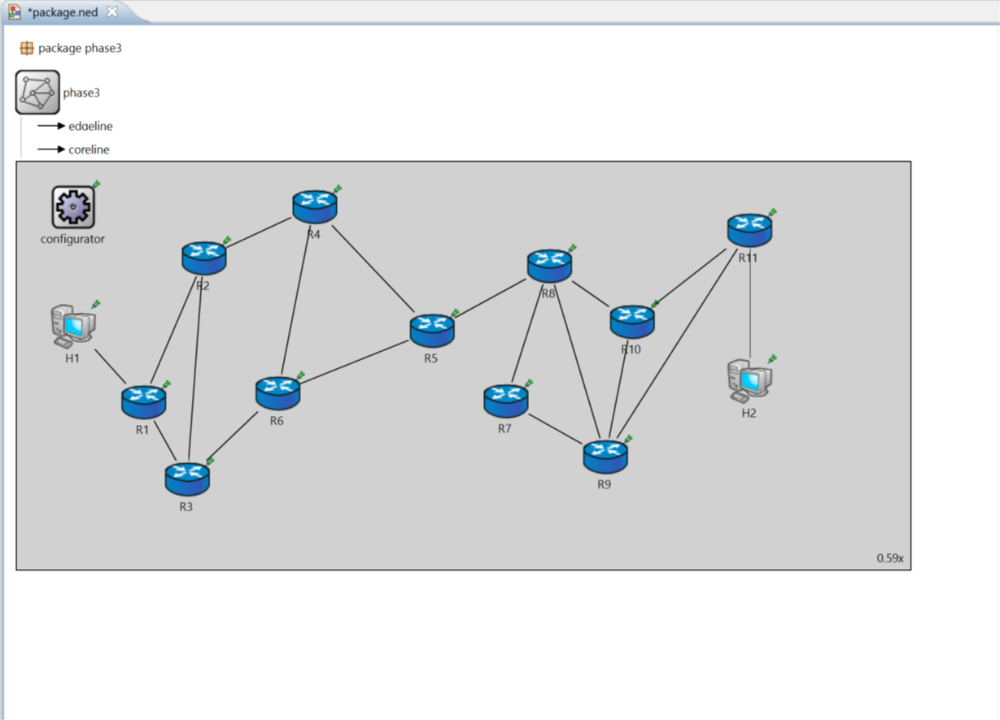
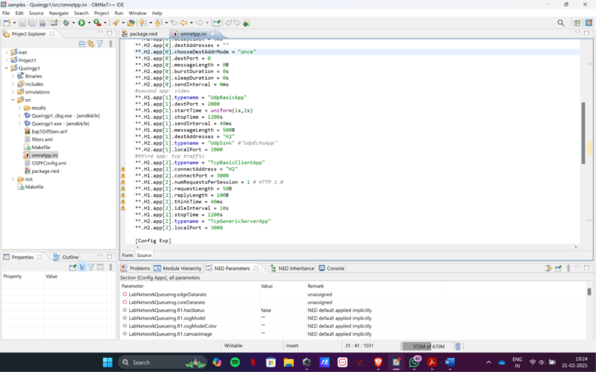
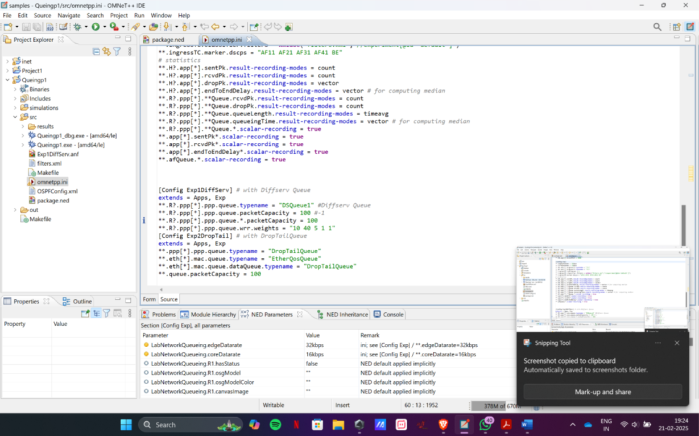
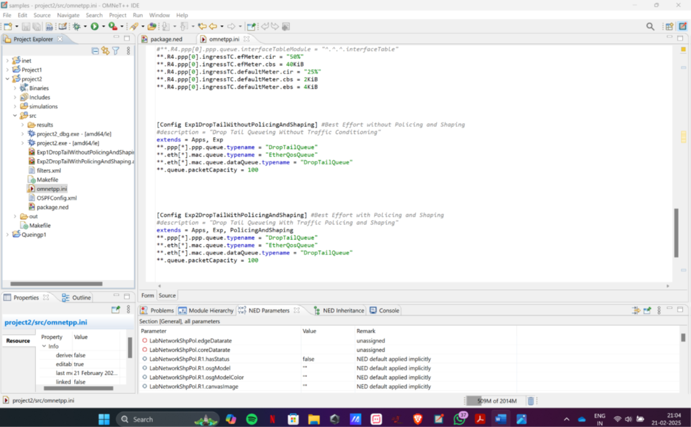
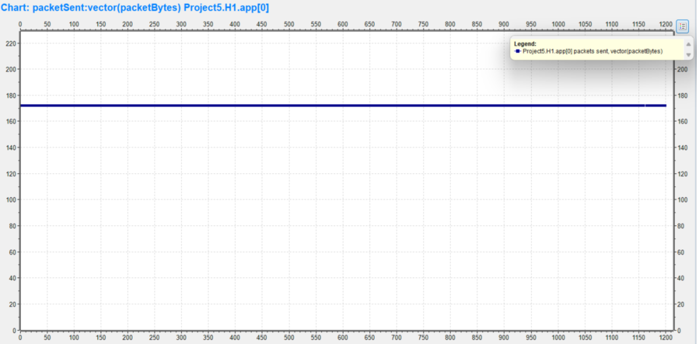
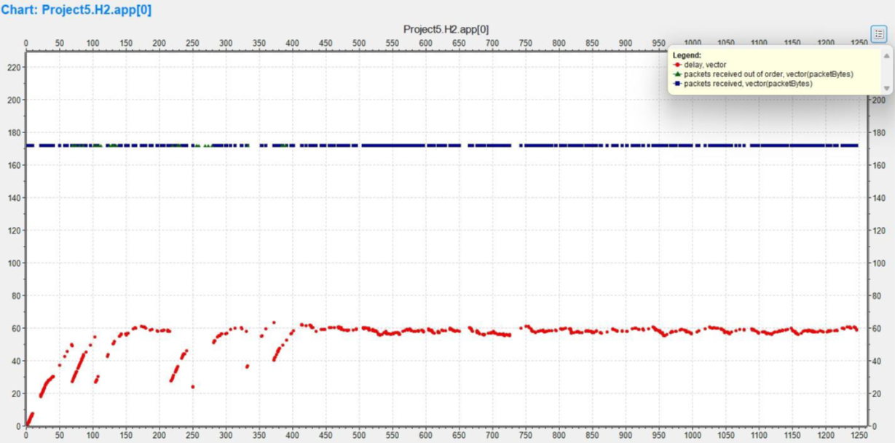
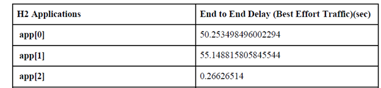
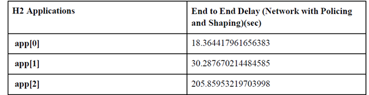

Intelligent QoS for Real-Time Multimedia over the Internet
Design, Simulation, and Evaluation of DiffServ, Traffic Shaping, and Policing in OMNeT++/INET
Introduction
Interactive audio and video suffer on best-effort networks because every flow competes equally
for buffers and bandwidth. This project designs and simulates a QoS pipeline—Differentiated
Services (DiffServ), traffic shaping, and policing—to prioritize real-time flows
(voice/video) while preserving overall stability for best-effort traffic. Using OMNeT++ with
INET, we build a multi-router topology carrying voice (UDP bursts), video (UDP), and web
data (TCP), and we measure the impact on end-to-end delay, queuing time/length, packet
loss, and delivered packets across staged experiments (Phase-1 → Phase-2 →
Phase-3).

Network Topology diagram from Phase-3 (“Network Topology” figure)
Objective
Validate that DiffServ + shaping + policing improve latency/jitter and delivery for
real-time traffic versus best-effort; compare DropTail vs DiffServ/WFQ queuing.
System Overview and Design
Network & traffic model
The testbed is a multi-router IP network (R1…R7/11) with two end hosts (H1↔H2). We drive three
canonical flows:
-
UdpBasicBurst (Voice) :bursty, RTP-like; latency-sensitive
-
UdpBasicApp (Video) :continuous; latency-sensitive.
-
TcpBasicClientApp (Data) :request/response; loss-sensitive, elastic

"Application Configurations" screenshot/table from Phase-3 (or Phase-1 "Configured three
applications")
Phased build
-
Phase-1 :Baseline best-effort vs DiffServ/WRR; instrumentation for sent/received, delay, queue time/length
-
Phase-2 :Planned configurations and expected outcomes for Best Effort, Policing+Shaping, and Queuing+Policing+Shaping.
-
Phase-3 :Full experiments with graphs and tables for all three scenarios
QoS Implementation and Control Strategy
Service differentiation (DiffServ)
Packets are classified and marked into service classes (voice, video, data). Routers use
DiffServ queues (WFQ-like scheduling) so higher-priority flows are served preferentially
during contention.
Traffic shaping (edge)
Token-/leaky-bucket shaping smooths bursts to a configured rate before traffic enters the
core, preventing sudden queue buildup.
Traffic policing (ingress)
Policers enforce rate limits; out-of-profile packets may be marked or dropped to protect
SLAs and keep the network stable during overloads.

“Queuing Configurations” / router queue panels showing DiffServ vs DropTail from Phase-1 (e.g.,
DSQueue/EtherQosQueue vs DropTail)

Shaping/Policing configuration panel or diagram from Phase-2 or Phase-3 (token/leaky bucket settings)
Comparative queuing
We benchmark DropTail (single FIFO, tail-drop) against DiffServ queuing. DropTail's simplicity
can starve latency-sensitive flows under load; DiffServ/WFQ reduces head-of-line blocking and
improves fairness across classes.
Simulation and Results
We evaluate three scenarios; all metrics are gathered at H1/H2 and key router interfaces.
Case 1 — Best Effort (DropTail only)
This module automates streetlight operation using:
-
Packet delivery :Real-time flows experience heavy loss under congestion (e.g., audio sent ≈ 21k vs received ≈ 800; video sent ≈ 30k vs received ≈ 4k; data 1/1).
-
End-to-end delay:Real-time traffic shows very high latency (tens of seconds), while TCP remains comparatively low.


“Packets Sent and Received” graphs for Best Effort from Phase-3 (Audio/Video/Data)

“End-to-End Delay” graph/table for Best Effort from Phase-3 (or Phase-1 tables)
Takeaway: Conditioning helps, but priority is still required to keep voice/video consistently within latency budgets.
Case 3 — DiffServ + Queuing + Shaping + Policing
-
Delivery & delay :With per-class queues and edge conditioning, voice/video end-to-end delay drops relative to DropTail; delivery improves because critical packets avoid head-of-line blocking.
-
Queue behavior :DiffServ shortens queueing time/length at key interfaces compared to DropTail, indicating more efficient scheduling for mixed traffic.

“End-to-End Delay (DiffServ vs DropTail)” comparison from Phase-1 or Phase-3
Overall: The full QoS stack (DiffServ + shaping + policing) best balances latency and stability for real-time multimedia—outperforming both Best Effort and “rate control only”.
Conclusion
Service differentiation plus traffic conditioning is essential when voice/video share links with data. DiffServ queuing reduces latency for real-time classes, while shaping/policing contain bursts and preserve fairness. In contrast, best-effort DropTail exhibits severe real-time loss and delay under load. The combined strategy yields a predictable, lower-latency experience—exactly what interactive applications demand.